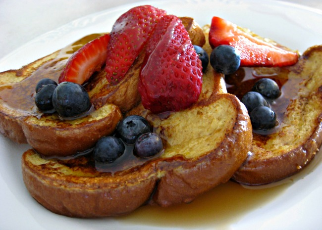

French Toast

Description:
There are many, fancy variations on this basic recipe. This recipe works with many types of bread - white, whole wheat, cinnamon-raisin, Italian or French. Serve hot with butter or margarine and maple syrup.
Ingredients:
- 6 thick slices of bread
- 2 eggs
- 2/3 cup of milk
- 1/4 teaspoon ground cinnamon
- 1/4 teaspoon ground nutmeg
- 1 teaspoon vanilla extract
- salt to taste
Steps:
- Beat together egg, milk, salt, desired spices and vanilla
- Heat a lightly oiled griddle or skillet over medium-high heat
- Dunk each slice of bread in egg mixture, soaking both sides. Place in pan, and cook on both sides until golden. Serve hot